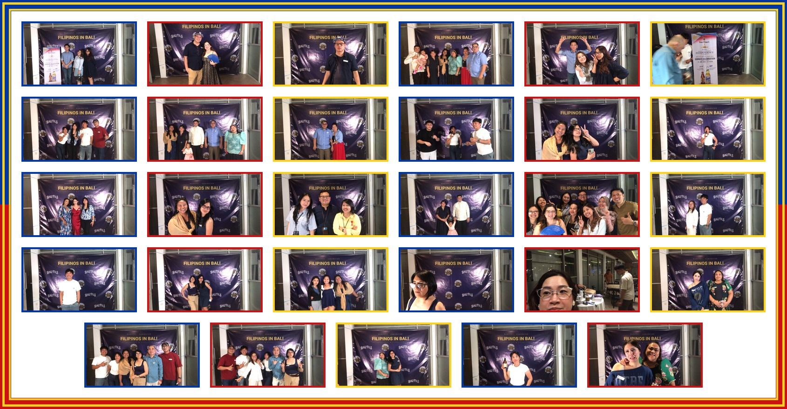
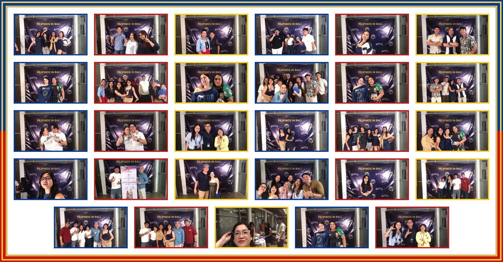
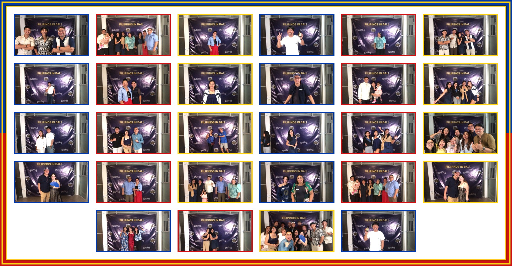
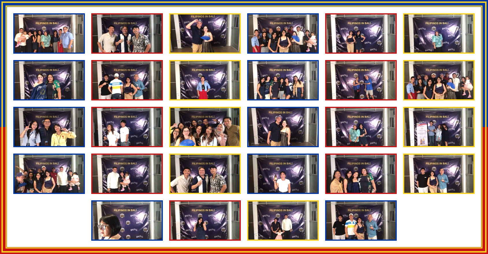
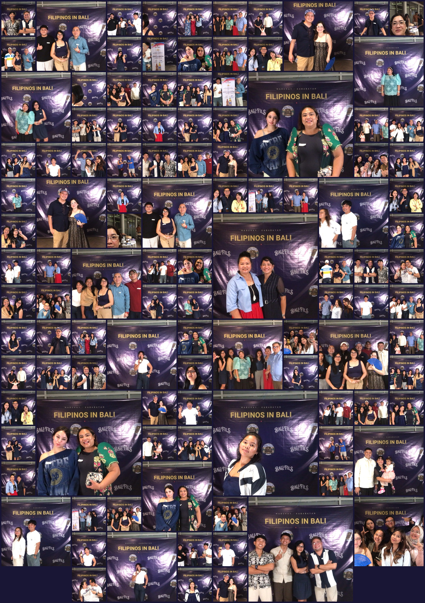

On Friday, June 12, 2026, kababayans from across the island gathered at Ramayana Hall, Bendega to celebrate Philippine Independence Day — far from home, but never apart. It was a night of Filipino food, music, laughter, games, and the kind of warmth that makes Bali feel a little more like home.
One night, one BaliFILs family
The doors opened at 6:00 PM as families arrived in the colors of our flag — red, blue, and white, with Barongs and Filipiniana adding a proud splash of heritage to the room. By 7:00 PM the hall was full, the program was underway, and the smell of a festive Filipino feast filled the air.
What followed was everything we hoped for: a shared dinner, live music and singing, games that had the whole room laughing, and a grand raffle that kept everyone on the edge of their seats. More than anything, it was a chance for our community to simply be together — to celebrate freedom, heritage, and unity as one BaliFILs family.
Watch the night unfold
We captured the highlights of the evening in a short video — the colors, the music, the food, and the faces that make our community what it is. Give it a watch and relive the night:
🎥 BaliFILs Philippine Independence Day 2026 — Event Reel
Moments from the celebration





Salamat to our sponsors
A night like this doesn't happen alone. Our heartfelt thanks go to the partners who made the celebration possible:
- Bank Mandiri
- CIMB Niaga
- San Miguel Beer
- Das Bistro by Mama's
Their generosity filled our grand raffle with prizes our kababayans won't soon forget — from a spa for two and high tea for two, to a two-night hotel stay and a dinner at Das Bistro by Mama's.
Maraming salamat, kababayan
To everyone who came, brought family and friends, wore our colors, and shared in the joy — maraming salamat. Every Filipino in Bali is a small thread in a long story of heritage and friendship, and nights like this are how we keep that story alive. Until the next gathering: come proud, come Pinoy. 🇵🇭